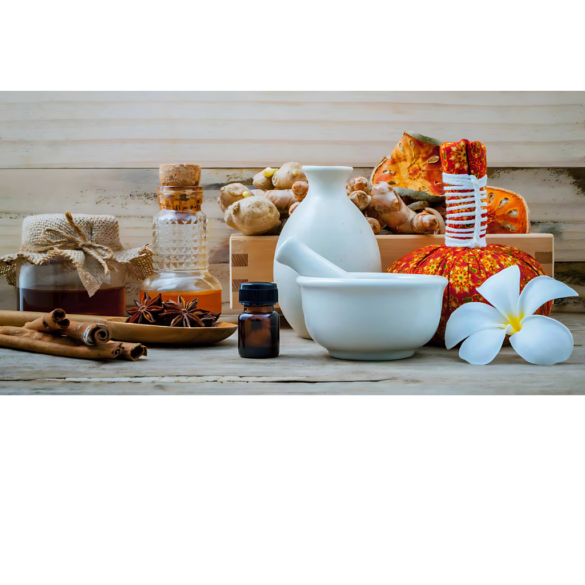

Unani Medicine, one of the oldest systems of traditional healthcare under AYUSH, is based on the philosophy that good health depends on the balance of four vital humors in the body – blood, phlegm, yellow bile, and black bile. Originating from ancient Greek traditions and later enriched by Arab and Persian scholars, Unani has flourished in India for centuries as a holistic system of healing. The practice emphasizes the importance of lifestyle management, proper diet, physical activity, and natural remedies for maintaining harmony within the body and preventing disease. Herbs, oils, spices, and plant-based formulations form the core of Unani treatments, often prepared in the form of syrups, powders, ointments, and decoctions. The image reflects this essence with ingredients like ginger, cinnamon, star anise, and medicinal extracts, which symbolize the natural approach of Unani in treating common ailments as well as chronic conditions. Unlike modern medicine that often targets symptoms, Unani seeks to identify and correct the underlying imbalance, making it both preventive and curative. Today, Unani medicine continues to be practiced widely in India and across the world, offering a safe, sustainable, and personalized system of healthcare that bridges ancient wisdom with modern needs. .